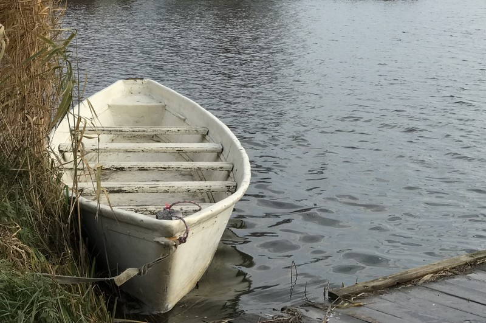
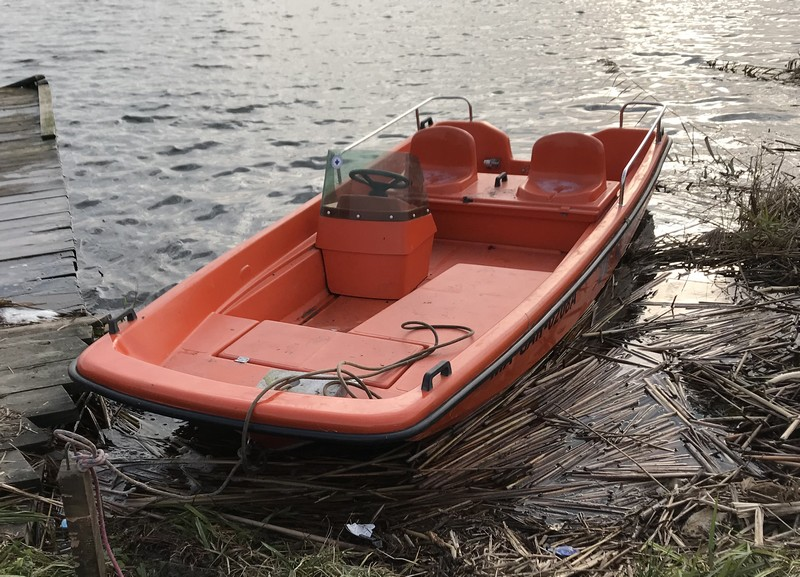
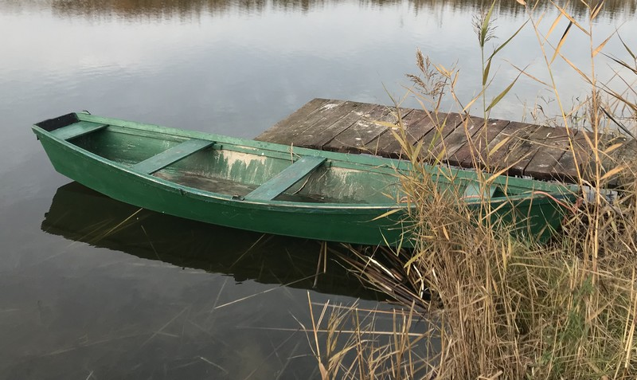

Cennik i rezerwacja
Łowiska karpiowego
Zezwolenie na dobę dla jednego wędkarzajedna doba (trzy wędki) Niedziela - czwartek100złjedna doba
Zasiadka piątek - niedziela240zł2 doby / jedna osoba
Każda następna wędkaZezwolenie pozwala na łowienie na trzy wędki każda następna wędka to dopłata w wysokości 20zł20zł
Osoba towarzyszącaOsoba towarzysząca uiszcza opłatę w wysokości 20 zł za dzień.20 złza dzień
Dowóz sprzętu quadem z przyczepkąDowozimy sprzęt wędkarski w każde miejsce na łowisku quadem z przyczepką.10złza jeden przejazd
Zezwolenie na dobę dla jednego wędkarza feeder / spławikjeden dzień (dwie wędki)70złjeden dzień
Posiadamy gratisowe wózki wędkarskie dla łowiących na transport sprzętu wędkarskiego.
Łowiska z drapieżnikami
Zezwolenie na dzień dla jednego wędkarza120złdzień
Osoba towarzyszącaOsoba towarzysząca uiszcza opłatę w wysokości 20 zł za dzień.20 złza dzień
Dowóz sprzętu quadem z przyczepkąDowozimy sprzęt wędkarski w każde miejsce na łowisku quadem z przyczepką.10złza jeden przejazd
Posiadamy gratisowe wózki wędkarskie dla łowiących na transport sprzętu wędkarskiego.
Doliczana jest opłata za śmieci 1 worek 120 l - 20zł
Wypożyczenie
Komplet - drewniane wiosła z dulkami, mata, podbierak50 zł
Drewniane wiosła z dulkami25 złdzień
Podbierak karpiowy30 złdoba
Kołyska karpiowa30 złdoba
Sling karpiowy30 złdoba
Ponton karpiowy60 zł+ kaucja / doba
Sprzęt
Dwie zielone łódki wędkarskie (2 osoby)50złdzień
Duża łódka wędkarska biała (4 osoby)60złdzień
Duża łódka wędkarska pomarańczowa (4 osoby)60złdzień
Łódka wędkarska biało-bordowa (2 osoby)50złdzień
Łódka wędkarska biało-pomarańczowa (2 osoby)50złdzień
Łódka wędkarska biało-czerwona (2 osoby)50złdzień
Wodowanie własnej łódki lub pontonu20zł
Nasze łódki nie posiadają w standardzie wyposażenia. Koszt wynajęcia wioseł wraz z dulkami, kotwicą - 50zł / dzień.
Nasz Sprzęt



Łódki nie posiadają silników elektrycznych oraz typowych wioseł wędkarskich, uchwytów dulka.
Na wyposażeniu łódek posiadamy wiosła kajakowe, obciążenia granitowe.
Zachęcamy do korzystania z własnych silników elektrycznych.
Cennik za 1kg złowionej ryby
Karaś15złkg
UWAGA WĘDKARZE !!
Wszystkie złowione ryby wypuszczamy z powrotem do łowiska, wyjątek stanowi karaś - 1kg 15zł.
Wszystkie złowione ryby wypuszczamy z powrotem do łowiska, wyjątek stanowi karaś - 1kg 15zł.